Dead Space
Dead Space es un juego de acción y terror en primera persona, se desarrolla en una extractora espaciál en la que unos necromorfos han acabado con la tripulación.
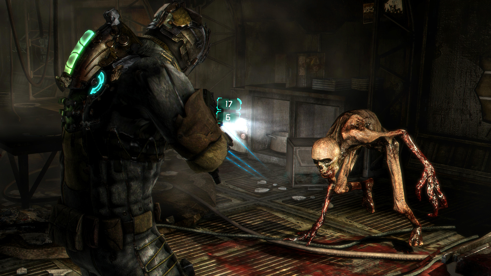
Dark Souls II
Dark Souls II es un juego de acción y rol, tiene lugar en un mundo abierto en el que tienes que acabar con los distintos jefes con una gran variedad de armas y objetos.
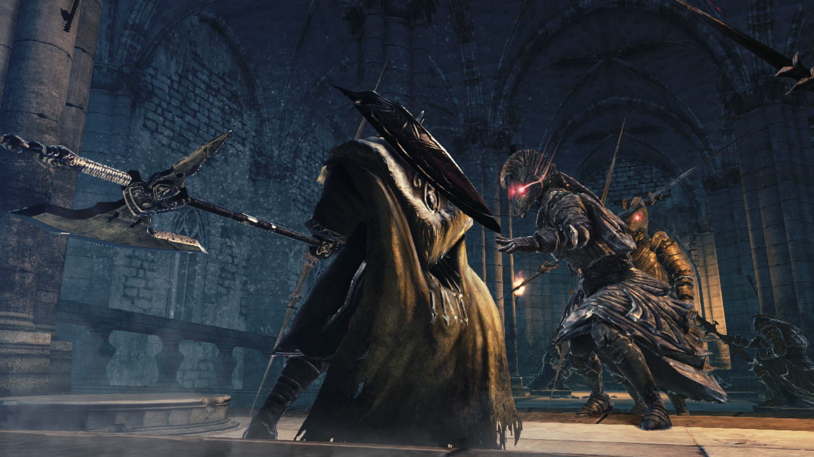
Fifa 18
Fifa 18 es un juego de simulacíon de futbol, en este juego puedes desarrollar tu propia historia futbolistiaca como jugador o como manager, también puedes jugar contra otras personas en modo online y jugar la historia de Alex Hunter, un jugador ficticio creado por EA Sports.
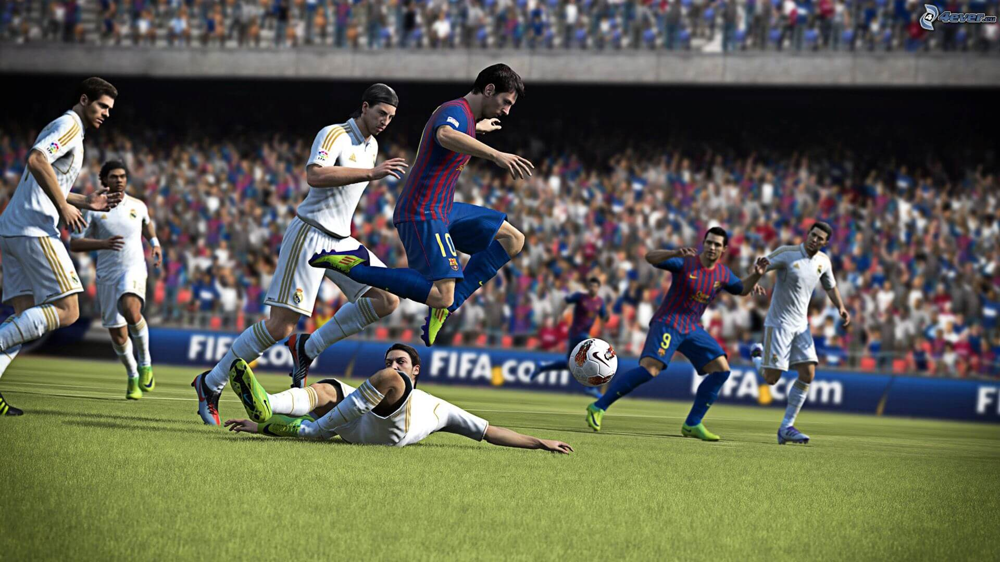
Cities: Skylines
Cities: Skylines es un juego de simulación en el cual tienes que gobernar tu propia ciudad desarrollandola cada vez más
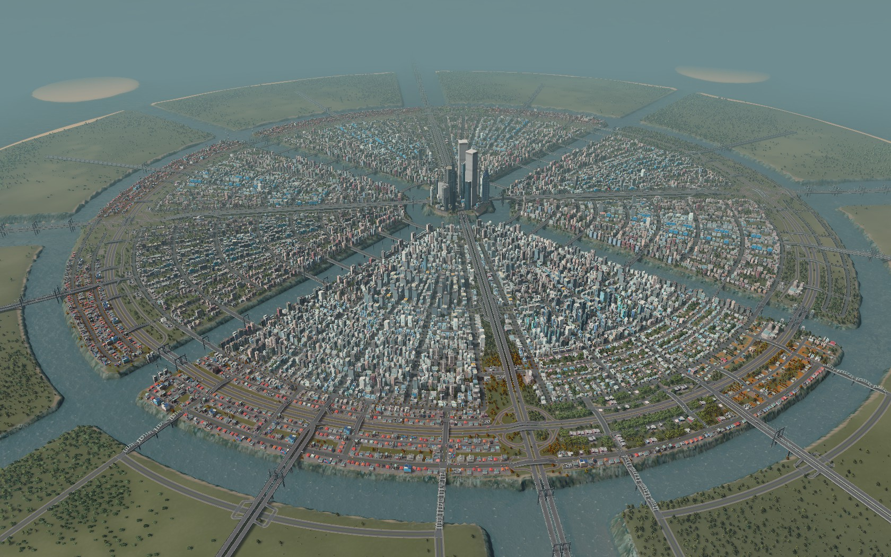
Xcom Enemy Unknowns
Xcom enemy unknowns es un juego de estrategia por turnos en el que tienes que acabar con tus enemigos, se puede jugar contra la CPU y modo online.
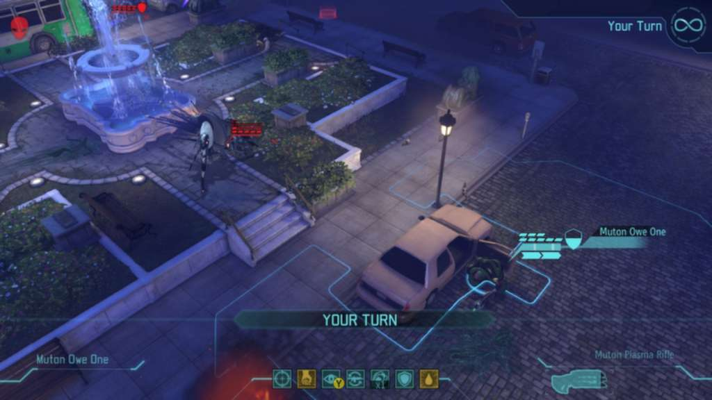
Age of Empires: II
Age of Empire: II es un juego de estrategia en tiempo real, esta ambientado en la edad media, trás caer el imperio romano, y se pueden usar a una de las 13 civilicaciones que existieron en aquel periodo.

Skyrim
Skyrim es un juego de ROL en el cual eres un Dovahkiin, sangre de dragón, tu objetivo es derrotar a Alduin el dragón más poderoso, ya que está resucitando a otros muchos dragones y causando amenaza
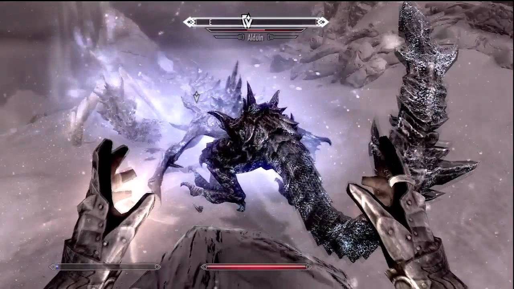
The Witcher 3
The Witcher 3 es un juego de ROL el objetivo es destruir la profecia de Ithlinne la cual dice que el universo será destruido por el Frío Blanco

Monkey Island
Saga de juegos de aventura gráfica que narra la historia de como Guybrush intenta convertirse en el pirata más temido
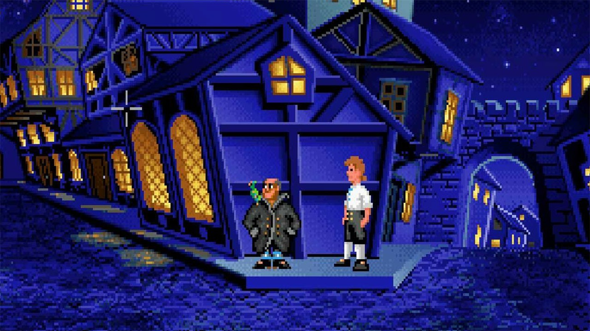
Firewatch
Firewatch es un juego de aventurasen el cual eres un guardia forestal que ha perdido a su mujer y tiene que descubrir diversos sucesos que ocurren en el bosque donde trabaja
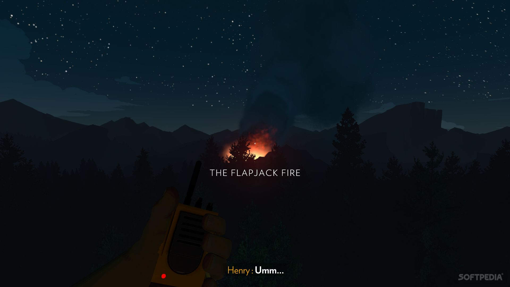
Counter Strike: Global Offensive
Counter Strike: global offensive o también conocido CS:GO es un juego FPS en el cuál no hay otro objetivo que derrotar a tu rival en partidas de 5 vs 5, al mejor de 30 rondas.
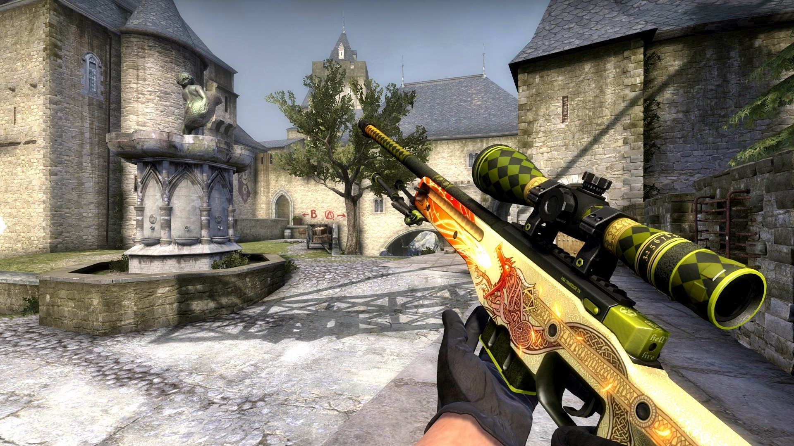
Call of Duty: Black Ops 3
CoD: Black Ops 3 es un juego FPS en el cual te enfrentas a tus enemigos de manera online con el objetivo de derrotarles en diversos modos de juego o también tienes la posibilidad de jugar contra zombies de manera online u offline, el objetivo puede ser conseguir una cantidad de puntos para terminar o simplemente pasar rondas y rondas aumentando la dificultad y vida de los enemigos.
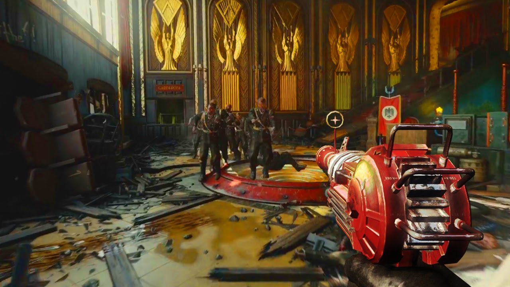
League of Legends
League of Legends es un MOBA(Multiplayer Online Battle Arena) en el cual el objetivo és matar subditos que te dan experiencia y destruir el nexo enemigo, tiene modalidad 5vs5 y 3vs3
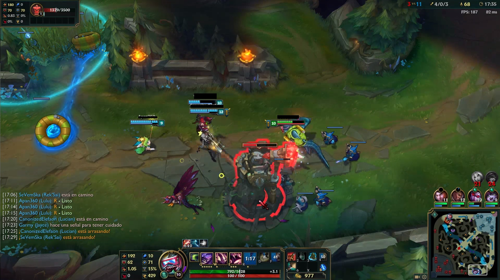
Smite
Smite es un MOBA(Multiplayer Online Battle Arena) en primera persona en el cual los personajes son dioses mitológicos y el objetivo es destruir el nexo enemigo.
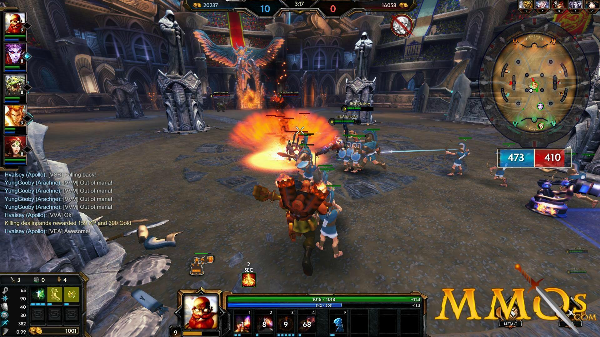
Volver arriba